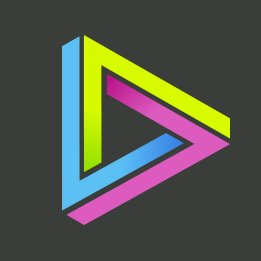

Mark Beukers
- shard.page
- github.com/Shard
- mark@afrotoss.com
- Brisbane, Australia
Employment History
Rune Logic Founder 2025-Present
- Leading development of Lichworks, an automation RTS built in C# on FNA with a custom ECS architecture enforced by Roslyn analyzers
- A deliberate stress test of AI-native development: near-100% of the engine is agent-written, sustaining 50k+ active entities at 60fps
- Deterministic lockstep multiplayer co-op with drop-in/drop-out play, headless dedicated servers, replay recording and desync detection
- Shipping cross-platform Linux/Windows/Mac builds to Steam and itch.io
Valiant Finance DevOps Engineer 2024-2025
- Overhauled backend and frontend CI pipelines, cutting commit-to-completed runs from 15+ minutes to under 5
- Designed and deployed a FluxCD-managed (GitOps) Kubernetes cluster on AWS for internal development environments
- Improved database performance and uplifted observability practices and systems
Userback Full Stack Developer 2022-2024
- Led development on npm Widget SDKs for multiple frameworks including automated testing
- Refactored and upgraded existing web extension to support Manifest V3
- Developed and deployed new Node.js REST API
- Feature development and modernisation work on existing PHP/Backbone stack
Newscorp Australia Senior Frontend Developer 2020-2022
- Led frontend efforts to modernise a legacy django2/grunt/jquery stack
- Python development on the custom Django 2 fork, supporting its migration alongside CI improvements
- Achieved more than 20x reductions in total FE size and vastly improved search traffic
- Designed and implemented a Docker Swarm architecture to handle deployments from local to production
Sizle.io Co-Founder/CTO 2017-2018/2022
- Originally building and founding mediapress.io (now sizle.io)
- Working closely with the CEO to design and develop features for a new and developing product
- Full stack development (AWS/Node.js/Express/Docker/React/Hasura)
Liquid State Lead Frontend Developer 2018-2019
- Led client solutions frontend development using React/Redux/GraphQL to create custom iOS, Android and web apps
- Agile based storybook driven development for open source up-streaming of components
Isobar Senior Frontend Developer 2015-2017
- Developing bespoke client solutions for AusPost/AGN/BHP/Jetstar built on top of Sitefinity and Sharepoint
- Designed and integrated frontend workflow for a team of 20 to enable low weight JS frontends
- Developed an offline-first mobile web app architecture with data sourcing from Sharepoint
Busivid Software Engineer 2014-2015
- C#/Mono development of video encoding APIs to enable multithreading and scaling capabilities
- Frontend development with CakePHP/jQuery
- Workflow improvements designed and implemented including SVN/git migration and CI/CD
- Development of Salesforce Apex application for integration into the main app

3rd Sense Full stack web developer 2012-2014- Backend APIs for Starling/iOS/Android video games with Node.js and Ruby on Rails for McDonald's, Blockbuster and Nickelodeon
- Design and development of Technicolor's metadata catalogue system
Big Click Studios Full stack web developer 2008-2012
- Developing custom web applications and websites with CakePHP 2/3 and ruby on rails
- Frontend development with jQuery(ui) and prototype.js
- System admin for CentOS/Debian servers running Apache/Nginx/MySQL/Sphinx
Projects
Foxhole Logi Pyramid github.com/Shard/fir
- Logistics supply calculator for the game Foxhole — a priority-calculation layer built on fir's TensorFlow/TensorFlow.js image recognition, turning stockpile screenshots into prioritised supply requirements
Fronius Exporter
- Rust Prometheus exporter for Fronius solar inverters with subnet auto-discovery, Grafana dashboards and Docker/Kubernetes (Helm) deployment, used at home to monitor my local power grid